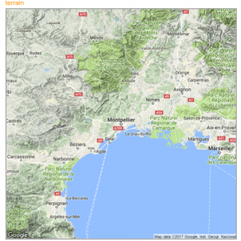
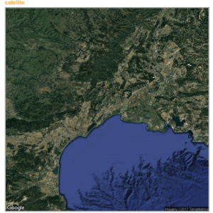
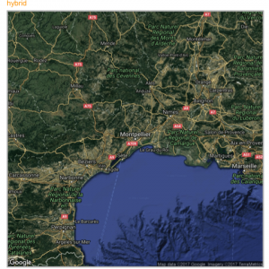

The ggmap package produces static maps. This post describes its basic utilisation, just building background maps. Other section are available for adding data on it, like bubble maps or chloropleth maps. The post is split in 2 parts: tiles coming from google and others coming from Stamen.
Building a google background
The get_googlemap() function allows to get google map tiles. Unfortunately, google now requires to sign up for an API keys for this code to work.




# Library
library(ggmap)
# For google map, you have to give the center of the window you are looking at.
# Possibility for the map type argument: terrain / satellite / roadmap / hybrid
# get the map info
map <- get_googlemap("Montpellier, France", zoom = 8, maptype = "terrain")
# Plot it
ggmap(map) +
theme_void() +
ggtitle("terrain") +
theme(
plot.title = element_text(colour = "orange"),
panel.border = element_rect(colour = "grey", fill=NA, size=2)
)Calling stamen background
Using the same kind of code you can call stamen background. Just switch to the get_stamenmap() function.
The most famous background is probably the watercolor one.

# Library
library(ggmap)
library(gridExtra)
# For stamen map, you have to give the extremity of the window you are looking at. here is an example with the watercolor background (Around brisbane)
map <- get_stamenmap( bbox = c(left = 110, bottom = -40, right = 160, top = -10), zoom = 4, maptype = "watercolor")
ggmap(map) +
theme_void() +
theme(
plot.title = element_text(colour = "orange"),
panel.border = element_rect(colour = "grey", fill=NA, size=2)
)Let’s have a look to all the possibilities offered by this Stamen option:
# Library
library(ggmap)
library(gridExtra)
# Let's check all the possibilities offered by stamen
maptype <- c("terrain-labels", "terrain-lines", "toner", "toner-2011",
"toner-background", "toner-hybrid", "toner-lines",
"toner-lite", "watercolor")
mylist <- vector("list", length(maptype))
# Loop through them:
num <- 0
for(i in maptype ){
num <- num+1
map <- get_stamenmap( bbox = c(left = 150, bottom = -30, right = 160, top = -25), zoom = 8, maptype = i)
p <- ggmap(map) +
theme_void() +
ggtitle(i) +
theme(
plot.title = element_text(colour = "orange"),
panel.border = element_rect(colour = "grey", fill=NA, size=2)
)
mylist[[num]] <- p
}
# Arrange all this map in the same image with gridExtra:
n <- length(mylist)
nCol <- floor(sqrt(n))
do.call("grid.arrange", c(mylist, ncol=nCol))